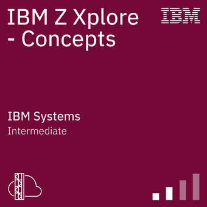
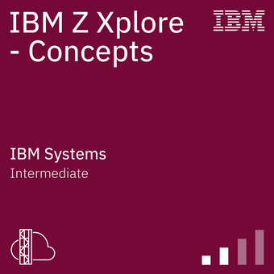

Mein Name ist Marc und ich befinde mich aktuell in der Umschulung zum Fachinformatiker für Anwendungsentwicklung. Mein Ziel ist es, fundierte Kenntnisse in Softwareentwicklung aufzubauen und praxisnah anzuwenden.
Vor meiner Umschulung war ich im Einzelhandel tätig – diese Erfahrung hat mir gezeigt, wie wichtig strukturierte Prozesse, Kundenorientierung und Zuverlässigkeit sind. Genau diese Werte bringe ich jetzt in meine neue berufliche Richtung ein.
In meiner Freizeit programmiere ich eigene Projekte, bilde mich kontinuierlich weiter und bin immer auf der Suche nach Möglichkeiten, mich fachlich und persönlich weiterzuentwickeln. Diese Webseite soll einen kleinen Einblick in meinen Weg und meine Fähigkeiten geben.
Skills:
Zertifikate und Badges:
 
